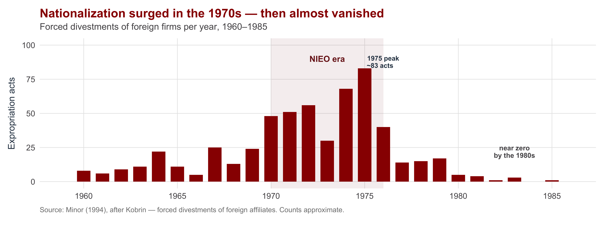
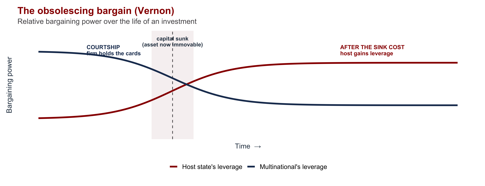
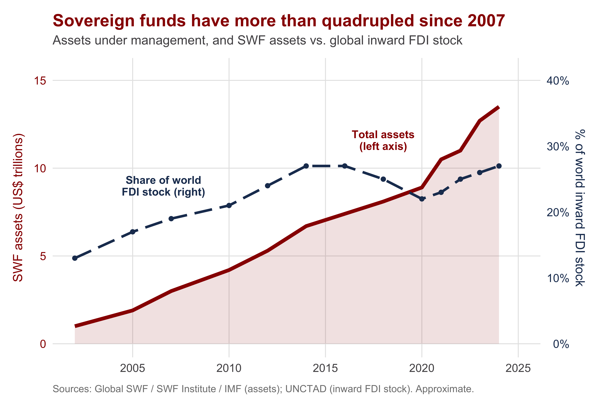
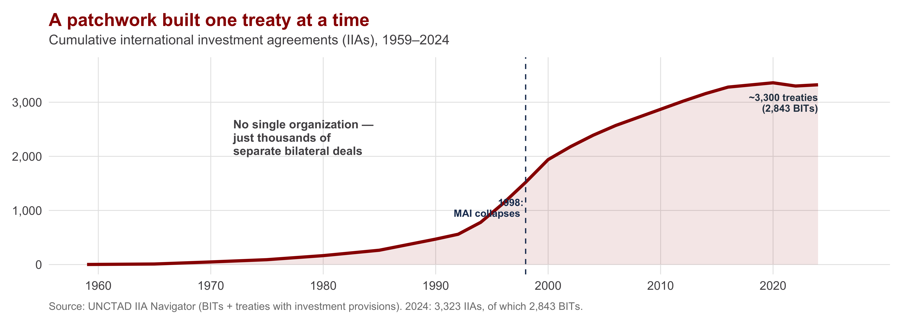
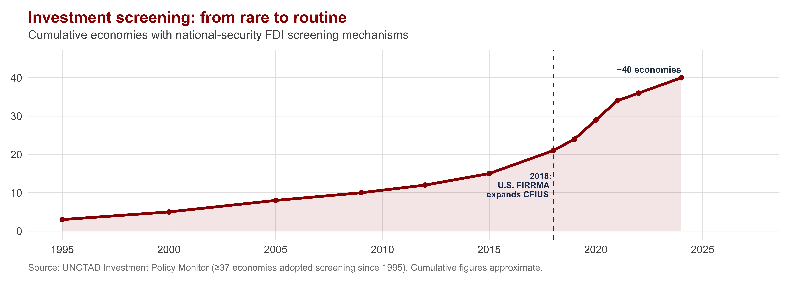

| Section | What we'll cover |
|---|---|
| 1 · One Firm, Many Sovereigns | Why the firm and the state answer to different masters |
| 2 · How Host States Try to Control MNCs | Performance requirements, the Calvo Doctrine, and the right to expropriate |
| 3 · The Other Side: Competing for Investment | Locational incentives and export-processing zones — the race to attract FDI |
| 4 · The Obsolescing Bargain | Why bargaining power shifts once the investment is sunk |
| 5 · Why There Is No "World Investment Organization" | Trade has the WTO; investment has 3,300 treaties and no organization |
| 6 · The Securitization of Investment | Emerging issue: national-security screening and CFIUS |
The Politics of Multinational Corporations
INTL 503 | Chapter 9
Professor Sarah Bauerle Danzman
July 17, 2026
Today’s Plan
Today’s Big Question
A multinational answers to many governments but to no global authority — so who actually controls it?
One Firm, Many Sovereigns
Chile, 1971: Who Owns the Copper?
Chile’s economy ran on copper — and the biggest mines were owned by two U.S. multinationals, Anaconda and Kennecott.
- In 1971, President Salvador Allende nationalized the mines — a unanimous vote of the Chilean Congress
- Compensation was slashed for “excess profits”; the firms fought back, lobbied Washington, froze Chilean assets abroad
- The MNC had become a flashpoint of sovereignty, foreign policy, and Cold War politics
A foreign firm owned a strategic national resource on Chilean soil. Whose rules apply — Chile’s, the home country’s, or the firm’s own global calculation?
That collision is at the heart of the politics of the multinational corporation.

Salvador Allende, President of Chile (1970–1973)
Chapter 8 examined why firms invest abroad. Chapter 9 turns to what happens once they do — when a profit-seeking global firm operates inside a sovereign state with goals of its own.
The Core Tension: State and Firm
| The State | The Multinational | |
|---|---|---|
| Frame of reference | Territorial — one national jurisdiction | Global — the worldwide operation |
| Objective | Maximize national welfare (jobs, revenue, security) | Maximize firm/shareholder welfare across all markets |
| Loyalty | To citizens who can vote and demand | To shareholders, not to any one host |
| Time horizon | Bound to the nation, indefinitely | Mobile — can exit, relocate, restructure |
Vernon’s insight: “the people in any national jurisdiction have a right to maximize their well-being… The MNC, on the other hand, is bent on maximizing the well-being of its stakeholders from global operations, without accepting responsibility for the consequences in individual jurisdictions.” (Vernon 1998)
The host’s dilemma: it needs MNCs to capture FDI’s benefits, yet cannot trust them to deliver those benefits on their own. Almost all the politics of MNCs is governments managing this dilemma.
How Host States Try to Control MNCs
The Host Country’s Toolkit: Performance Requirements
A performance requirement is a condition a host government attaches to FDI to make the firm’s behavior serve national objectives — not just the firm’s bottom line.
| Tool | What it forces the firm to do |
|---|---|
| Local-content rules | A set share of inputs must be sourced domestically — building local suppliers |
| Export requirements | The firm must export a set share of output — earning foreign exchange |
| Technology transfer | The firm must license or share technology with local partners |
| Joint-venture / equity caps | Foreign ownership is capped; a local partner must hold equity (control stays partly home) |
| Employment & training | Mandated hiring, training, or management localization of host-country nationals |
The aim is to capture the spillovers (Ch. 8): rather than let the MNC simply assemble and repatriate profits, these rules require linkages to local firms, workers, and technology. Section 5 returns to this — the WTO later restricted some as trade-distorting.
Asserting Sovereignty: The Right to Nationalize
When performance requirements weren’t enough, developing host countries asserted a more radical claim in the 1960s–70s: the sovereign right to nationalize foreign firms.
The Calvo Doctrine
A foreign investor is entitled to no more than national treatment, and disputes must be settled in the host’s own courts under host law — not through the investor’s home government or international arbitration. Sovereignty, not special protection.
Permanent Sovereignty over Natural Resources
UN General Assembly Resolution 1803 (1962) affirmed every state’s right to control — and expropriate — foreign-owned resources in the national interest, with compensation set by the host. The economic charter of the NIEO.
Both doctrines assert the same principle: the territorial state is supreme over the foreign firm. This marks the peak of host-country power — and it is what the later treaty regime was designed to undo.
The Expropriation Wave — and Its Collapse

Why did it collapse? The 1982 debt crisis left poor countries needing capital, which expropriation deterred. The deeper reason is that the bargaining power behind nationalization had shifted back toward the firms — the mechanism we turn to next.
The Other Side: Competing for Investment
From Controlling MNCs to Courting Them
By the 1990s the politics reversed: instead of restricting foreign firms, governments bid against each other to attract them.
Locational incentives
Inducements a host offers to win an investment: tax holidays, subsidies, cash grants, cheap land, infrastructure, regulatory relief.
Example: the U.S. South. In 1990 the Deep South built no cars; today Alabama, Georgia, Mississippi, and South Carolina build 2M+/year — lured by state incentive packages (BMW’s Spartanburg plant, 1992).
Export-processing zones (EPZs)
Carved-out enclaves where firms get duty-free imports, tax breaks, streamlined rules, and (often) lighter labor regulation — in exchange for export-oriented jobs.
From a handful of zones in the 1970s to thousands worldwide, concentrated in manufacturing for global value chains.
The host’s dilemma resurfaces: competing to attract FDI can become a “race to the bottom” — bidding away tax revenue and lowering standards. Incentives may capture the investment while eroding the benefits they were meant to secure.
The Obsolescing Bargain
Why Bargaining Power Shifts After the Investment Is Sunk

Before investing, the firm can shop among eager hosts → it wins generous terms. After the capital is sunk into an immovable mine, plant, or pipeline, it can’t credibly threaten to leave → the host can raise taxes, demand renegotiation, even expropriate. The original deal obsolesces.
When the Investor Is a State
A sovereign wealth fund (SWF) is a state-owned investment fund that invests national savings — often oil revenue or reserves — in assets abroad.

- SWFs collectively manage on the order of ~$13 trillion (2025); Norway’s fund alone holds ~$1.8 trillion
- Big players: Norway, China, the Gulf states, Singapore
- They turn the usual story around — now a foreign government owns a stake in the host’s firms, ports, and infrastructure
When the investor is a state, hosts suspect political, not commercial, motives. Is this just capital — or a foreign government acquiring leverage? This question is the hinge into the national-security concerns we close on.
SWFs (and state-owned enterprises) blur the line between investment and statecraft — which is exactly why they helped trigger the screening regimes in Section 6.
Why There Is No “World Investment Organization”
Trade Has the WTO; Investment Has 3,300 Treaties

A bilateral investment treaty (BIT) is a two-country pact protecting each other’s investors — national treatment, MFN, limits on expropriation, and investor-state dispute settlement (ISDS): the firm can sue the state before international arbitrators. Instead of one organization, the world built 3,300 of these.
Building Multilateral Rules: TRIMs and the MAI
Governments spent decades trying to build multilateral investment rules, with limited success.
TRIMs — a partial measure
The WTO’s Trade-Related Investment Measures agreement (1995) bans only the trade-distorting performance requirements — chiefly local-content and trade-balancing rules. It disciplines a few host tools but creates no general investment regime.
MAI — the comprehensive attempt
The Multilateral Agreement on Investment, negotiated at the OECD (1995–1998), aimed to be a comprehensive investment treaty — strong investor protections, binding ISDS. It collapsed in 1998 amid NGO and public opposition over sovereignty, and disagreement among the negotiating governments themselves.

Earlier attempts also failed: the 1948 Havana Charter (ITO) and the 1970s UN Code of Conduct on TNCs. Across three venues — UN, GATT/WTO, OECD — and nearly 30 years of talks, no comprehensive framework emerged.
Why No WTO for Investment? Home vs. Host
The deep reason: the two sides want a regime to do opposite things — and can’t agree what it should even govern.
| Home countries | Host countries | |
|---|---|---|
| Who they are | Capital-EXPORTERS — advanced, home to MNCs | Capital-IMPORTERS — developing, host to MNCs |
| What they want rules to do | PROTECT investors; lock in access; restrain host interference | PRESERVE sovereignty; keep the right to regulate & screen |
| Their model doctrine | Strong investor rights + ISDS (anti-Calvo) | Calvo Doctrine + permanent sovereignty |
| Whom rules should bind | Discipline HOST STATES | Discipline the FIRMS |
Rules that protect firms (what home countries want) are rules that constrain host sovereignty (what host countries refuse). With no overlap on whom to bind, the multilateral deal never closed — and the world defaulted to a decentralized, investor-protective BIT patchwork instead.
Contrast the WTO (state-to-state; only states have standing; one organization) with the investment “non-regime” (investor-to-state ISDS; firms sue states; thousands of treaties, no organization).
The Securitization of Investment
Emerging issue
From Attracting FDI to Screening It

The pattern reverses. For four decades, states competed to attract FDI; now advanced economies screen and sometimes block it on national-security grounds. In the U.S., CFIUS — strengthened by FIRRMA (2018) — reviews foreign deals; 342 filings in 2023 alone. “Economic security is national security.”
🎧 Podcast: Skadden, Economic Statecraft & Foreign Investment Screening — the screening “toolkit” in practice.
Recap: Who Governs the Multinational?
Today’s Big Question — A multinational answers to many governments but to no global authority — so who actually controls it?
The struggle, then the swing
- One firm, many sovereigns: Vernon’s tension — global firm vs. territorial state
- Hosts push back: performance requirements, the Calvo Doctrine, permanent sovereignty, expropriation
- Then they court: locational incentives & export-processing zones
- The obsolescing bargain explains the swing — power shifts once capital is sunk
Governance, or its absence
- No World Investment Organization: TRIMs is narrow, the MAI collapsed — home and host want opposite rules
- So: 3,300 BITs + ISDS, not one body
- Now: SWFs, then security — screening & CFIUS rebuild host control as national security (securitized political economy)
The throughline: the multinational has long operated in the gap between a global economy and a world of sovereign states. No international organization filled that gap, and today the security state is moving into it.

INTL 503 | The Politics of Multinational Corporations